Booking a ride sounds simple — until you're doing it on behalf of someone else, for a specific appointment window, for a rider who may not even have a smartphone. Lyft Concierge is built for exactly this: healthcare facilities, automotive organizations, and other companies that coordinate transportation for the people they serve. As a product design intern at Lyft, I spent twelve weeks reducing friction in the Concierge web booking flow, making it faster, clearer, and less prone to error.
Opportunity Space
When transportation is part of the care journey.
Lyft Concierge riders are often older adults, patients, or individuals without access to smartphones, which means they rely on coordinators to book rides on their behalf for appointments. Unlike typical Lyft rides, these trips are often scheduled in advance, tied to strict appointment windows, and may involve riders with limited mobility, health concerns, or heightened anxiety around travel.
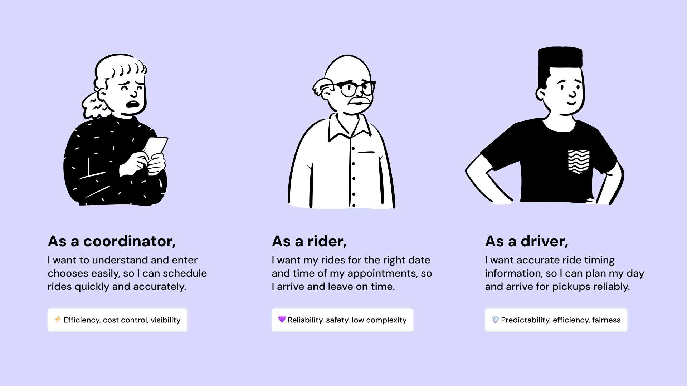
The date and time selector on Concierge Web presents a suboptimal user experience.
At the center of that booking flow sits the date and time selector, and it wasn't meeting the demands of the context.
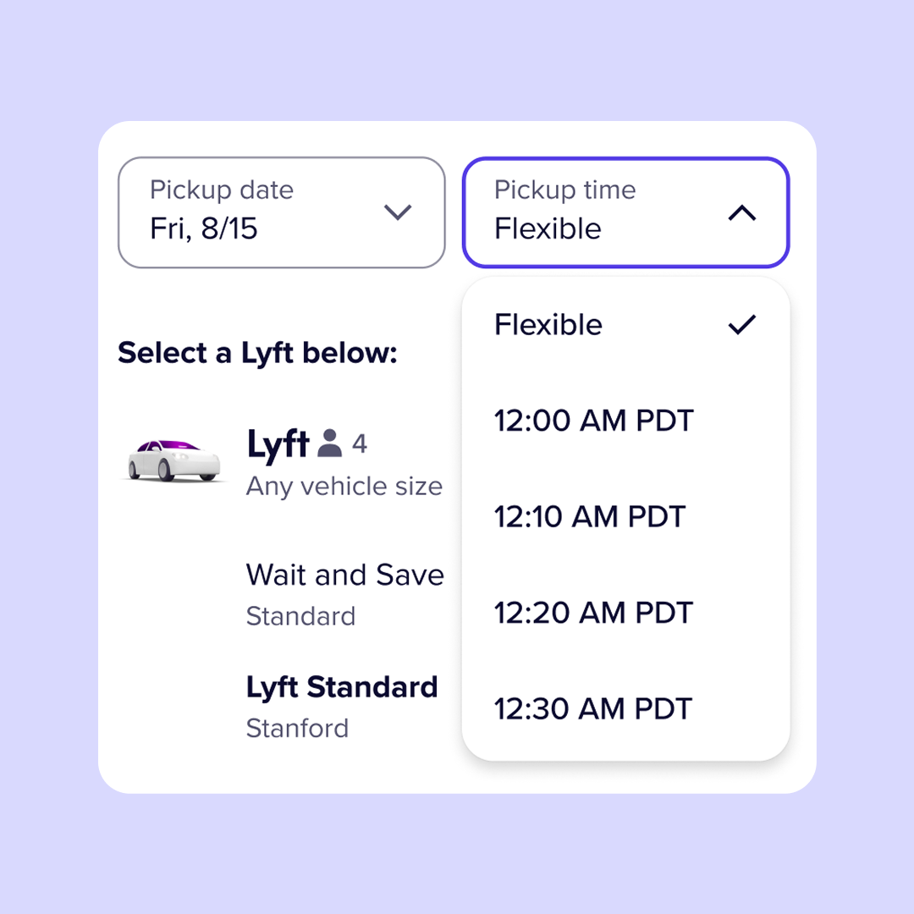
Time-consuming process
Coordinators scroll through 10-minute increments starting at 12:00AM, a tedious experience for someone managing multiple bookings under time pressure.
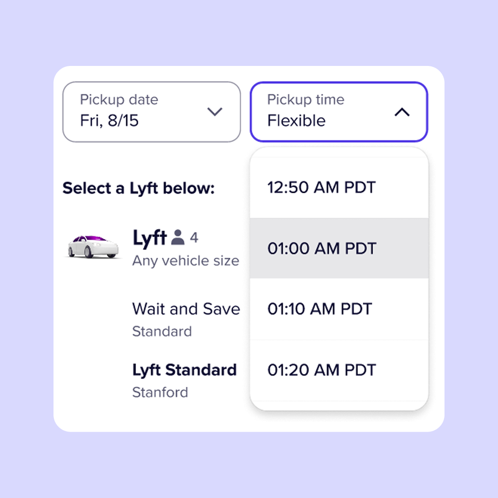
Susceptibility to error
Moving quickly makes mistakes easy. Selecting 1:00AM vs. 1:00PM is a real risk, and a single slip can mean a misbooked ride and a rider who never gets picked up.
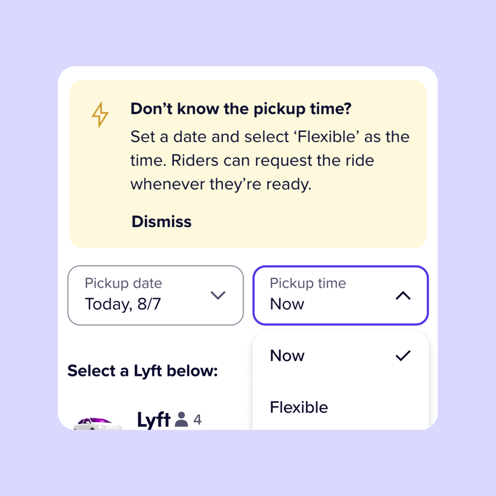
Unclear ride request types
Concierge supports three pickup types, but they're buried in the time selector with little context or visual distinction, making them easy to overlook entirely.
For coordinators managing rides across tight schedules, a suboptimal experience introduces unnecessary cognitive load and room for error. In a workflow where precision directly impacts someone's care, that's a problem worth solving carefully.
My Work
Focusing on the high-impact decisions coordinators make every booking.
My work centered on how coordinators choose timing, understand and select ride options, and specify pickup locations, ensuring these high-impact moments in the flow were clear, flexible, and error-resistant. Specifically, I:
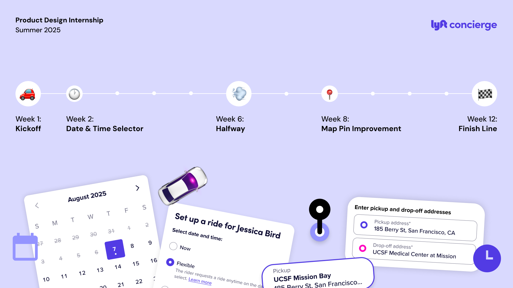
Shipped improvements to every ride booked.
I delivered key product updates that power every web booking to ensure users are met with a more satisfactory experience.
Collaborated across multiple disciplines.
I partnered cross-functionally to bring in feedback and align everyone involved, from problem discovery to implementation.
Ramped up on a complex product space.
I quickly onboarded and immersed into the complexity of Lyft Concierge, to design with empathy for users and product thinking for the business.
A booking experience rebuilt around how coordinators actually think.
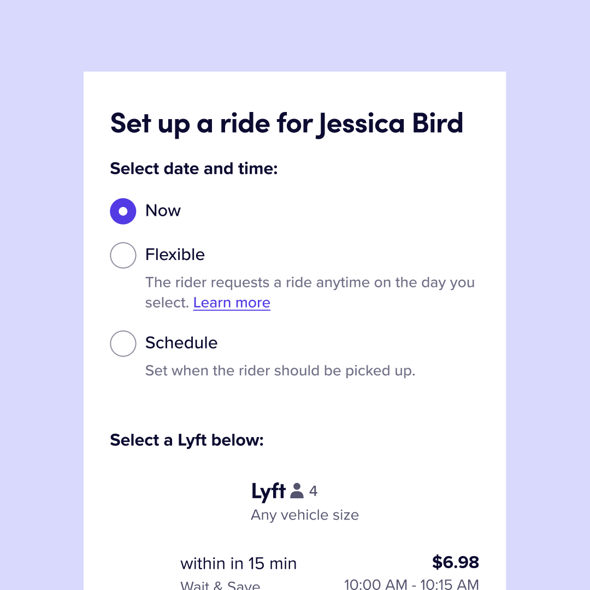
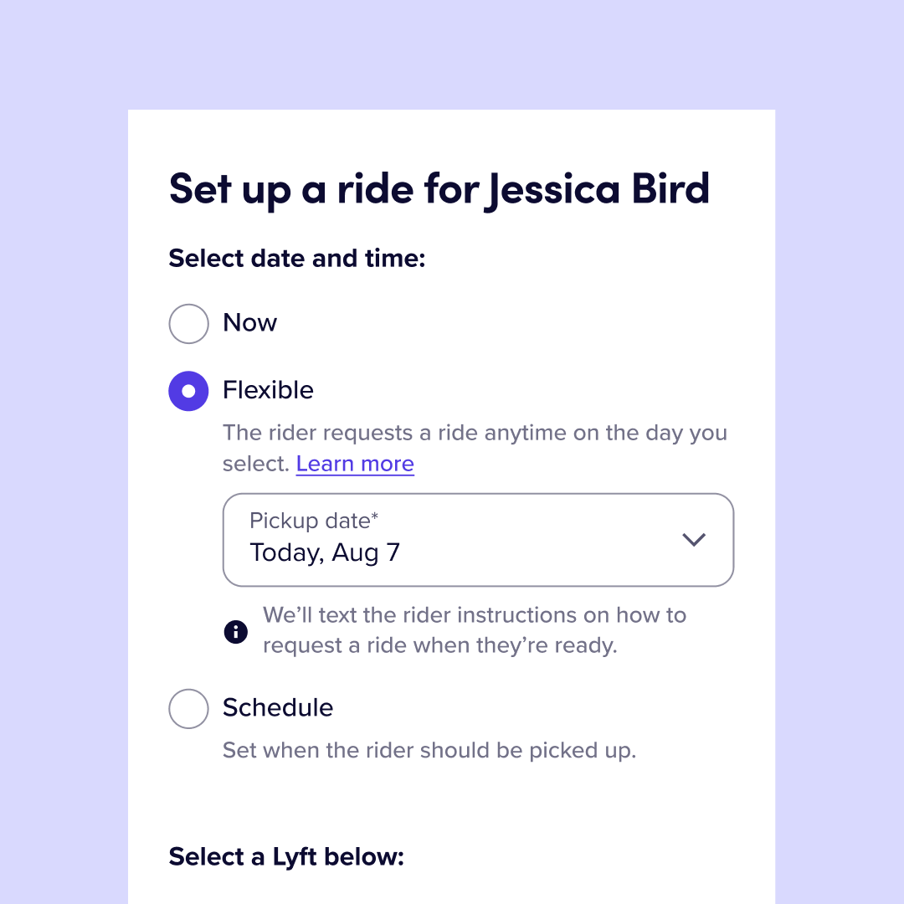
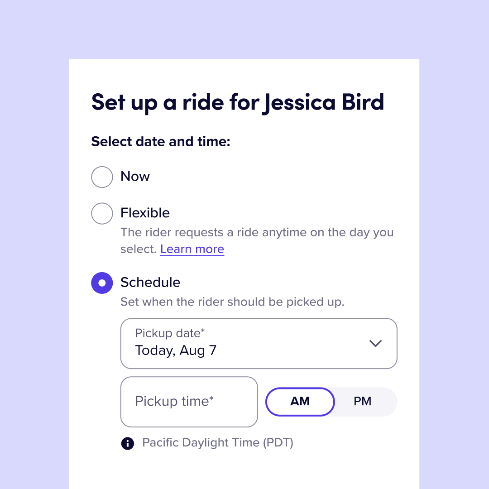
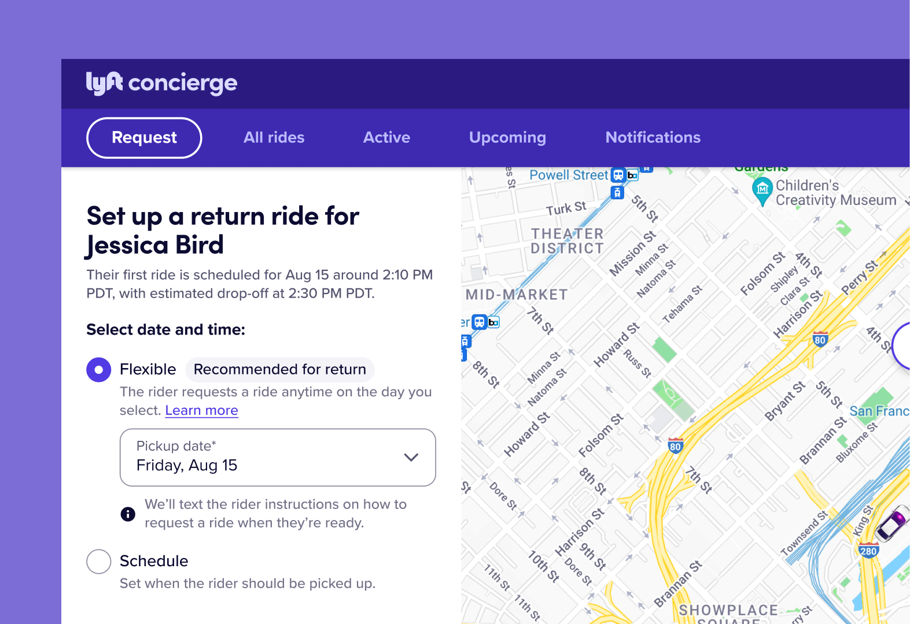
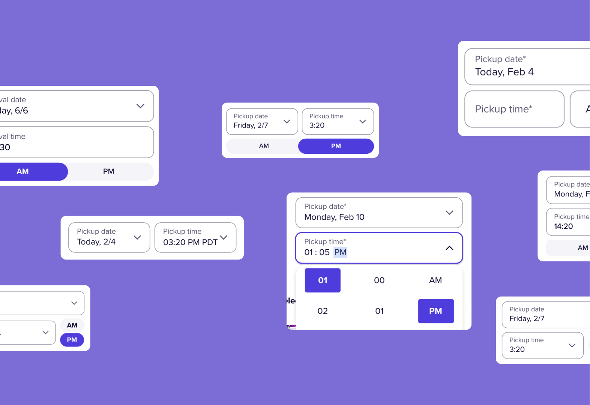
Feel free to reach out at liwndy@gmail.com if you’d like to know more about my work at Lyft!
Design with clarity and curiosity!
Move forward with clarity, not wait for certainty.
One of the biggest things this internship taught me was how to make confident decisions under ambiguity. There's rarely a perfect answer in design — what matters is having a clear rationale and the judgment to move forward thoughtfully. Time is limited, and waiting for certainty is its own kind of risk.
Understand the business decision behind design.
Every decision is shaped by priorities, constraints, and trade-offs that extend well beyond the screen. This project gave me a real appreciation for that, and it's something I'm excited to develop further, learning to balance craft with impact in a way that serves both users and the business.
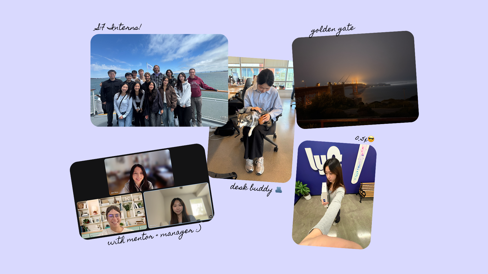